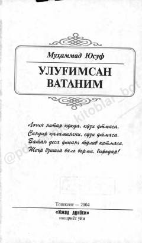

UVMuhammad Yusuf qalamiga mansub Vatanni ulug'lovchi she'rlar va dostonlar to'plami.
Ushbu to'plam o'zbek xalqining ardoqli shoiri Muhammad Yusufning Vatan va mustaqillik mavzusidagi she'rlari hamda dostonlaridan iborat. Kitob shoirning 50 yillik yubileyi arafasida nashr etilgan bo'lib, unda Vatanga bo'lgan cheksiz muhabbat va sadoqat tarannum etiladi.